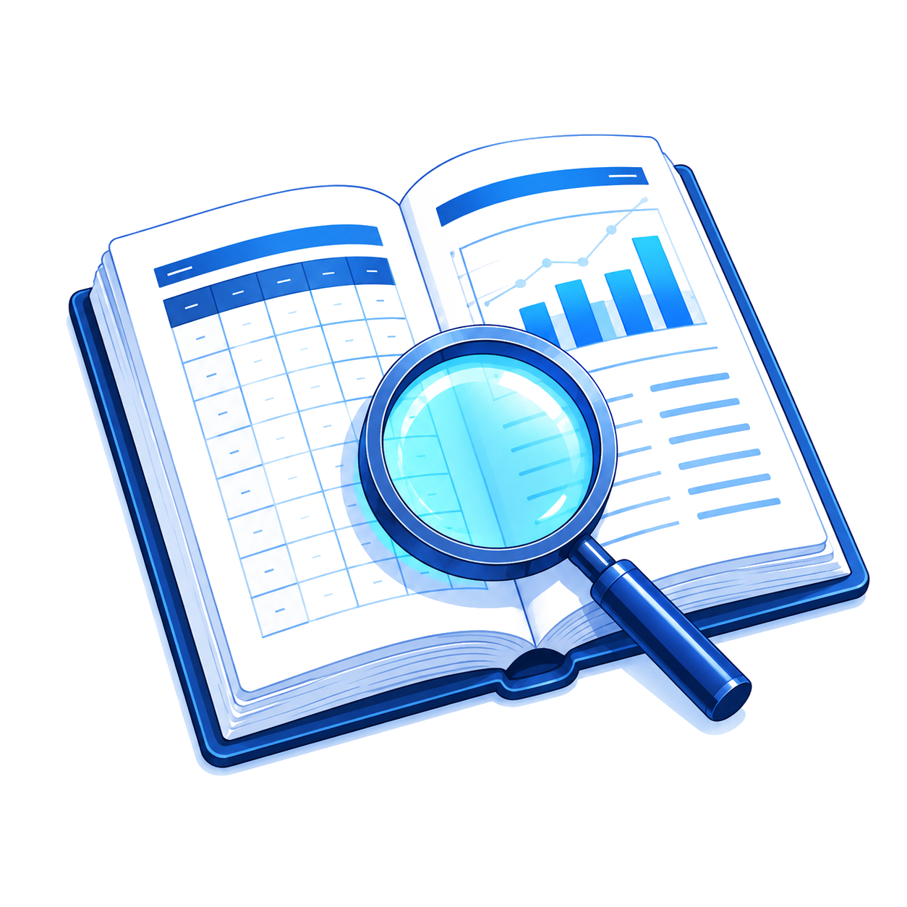
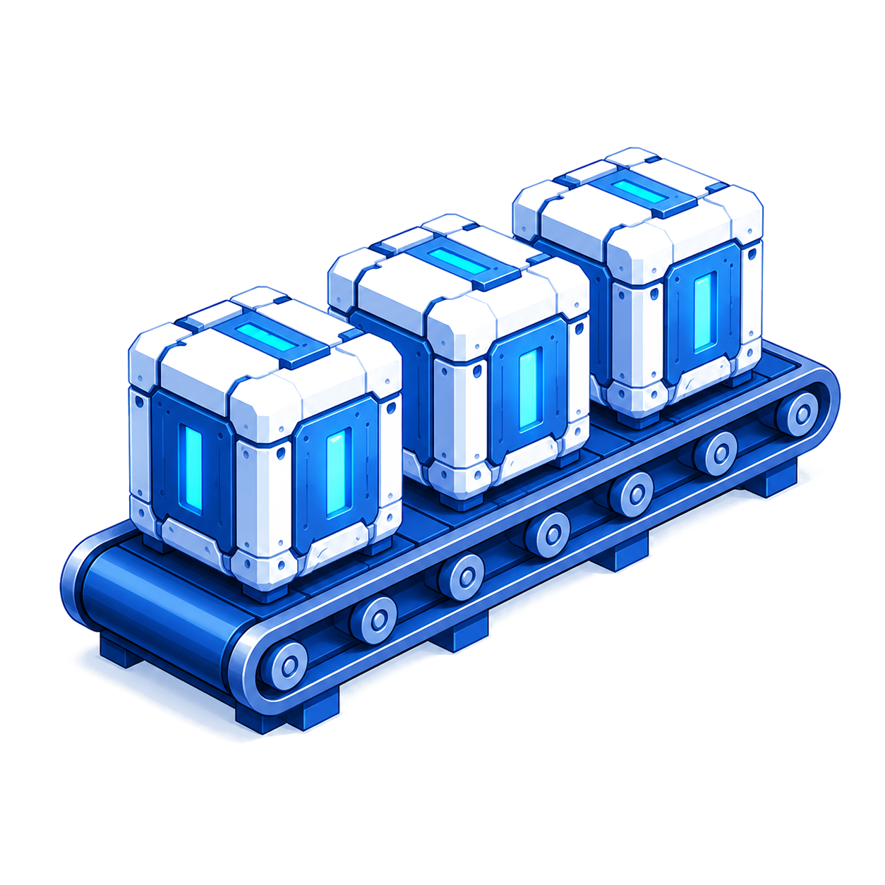
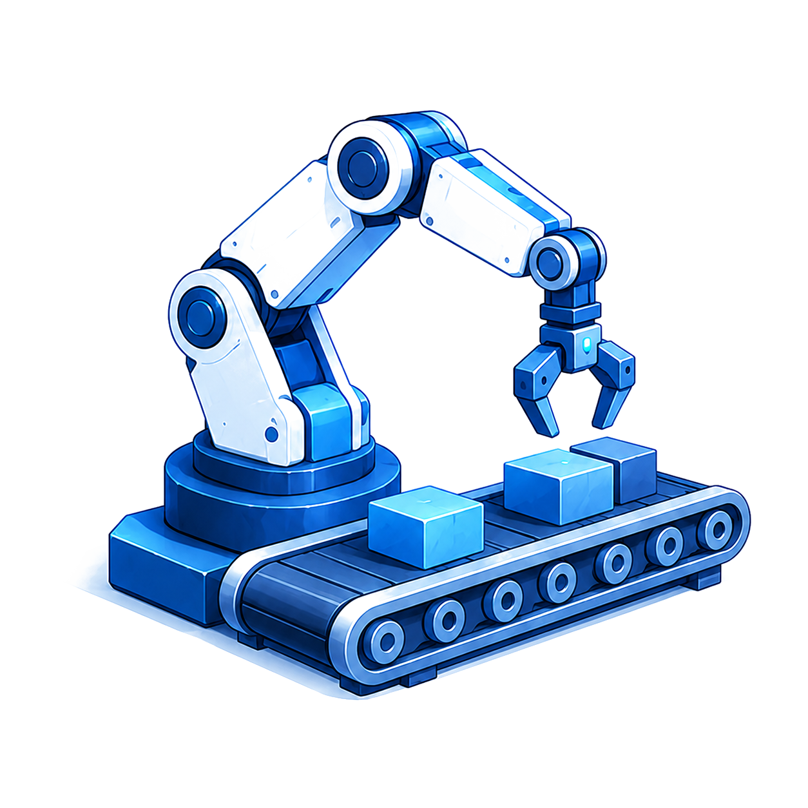
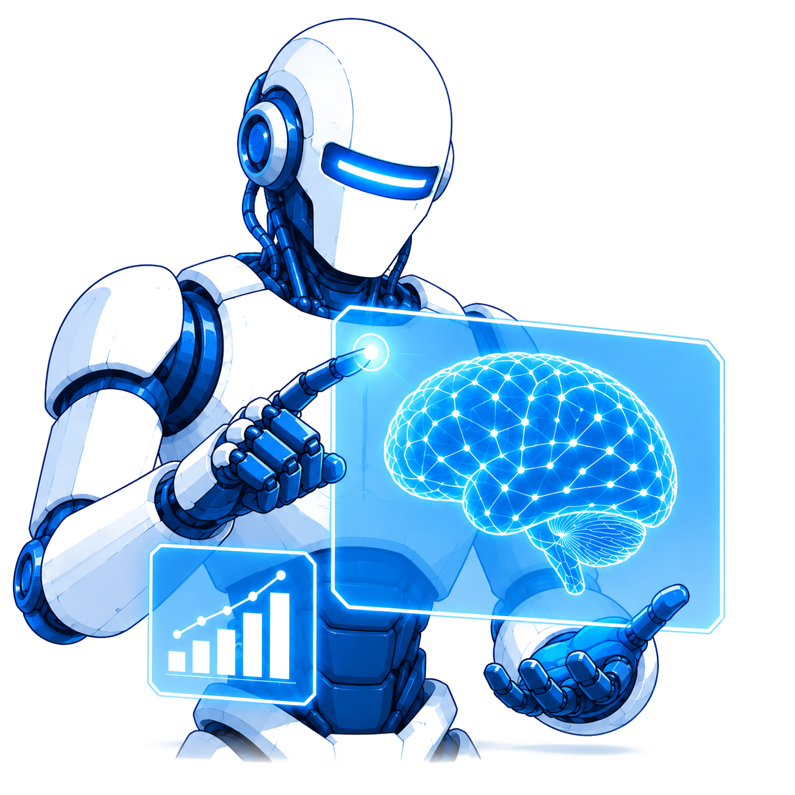
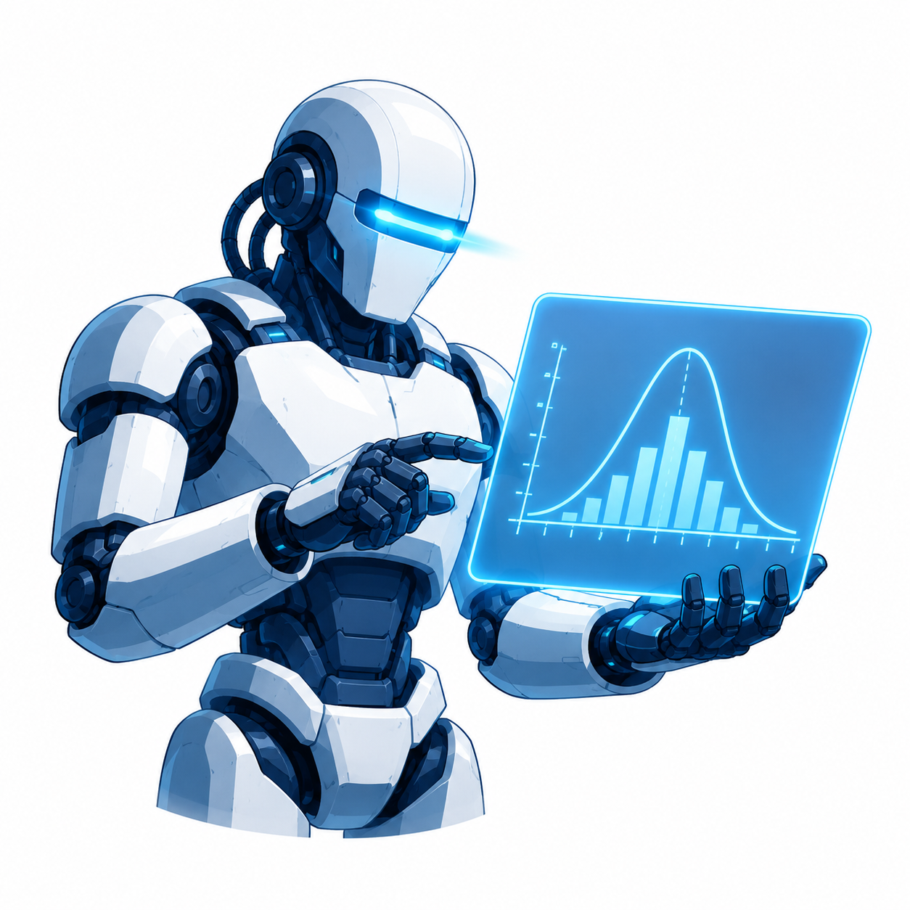
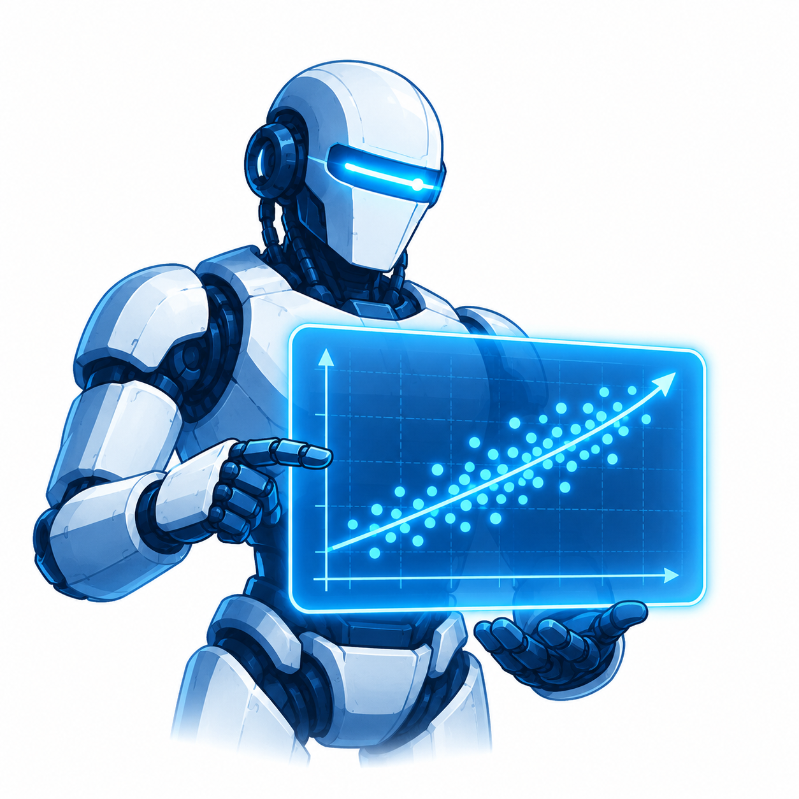
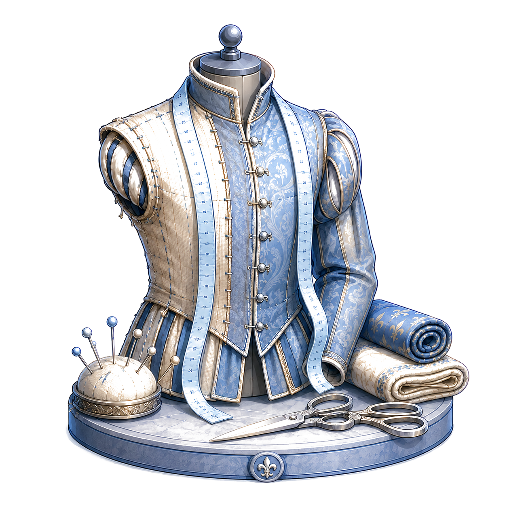
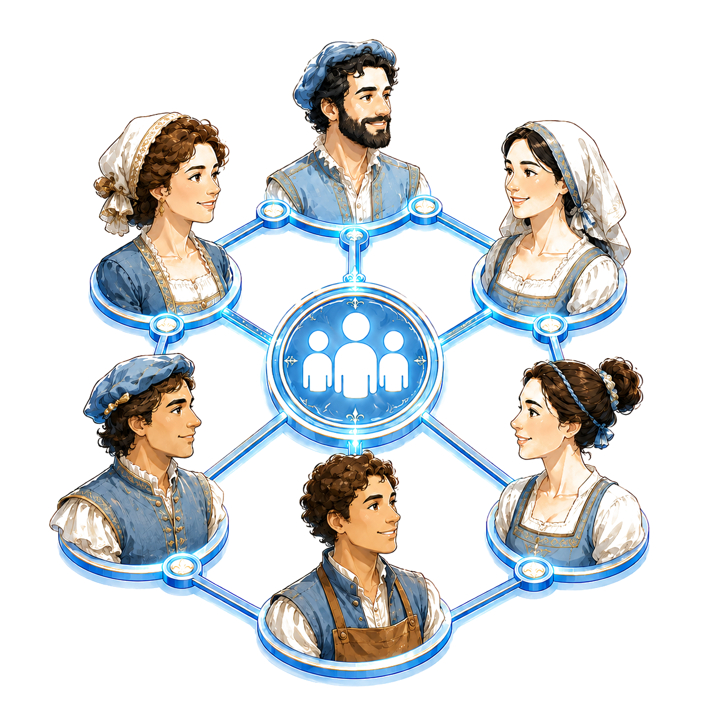
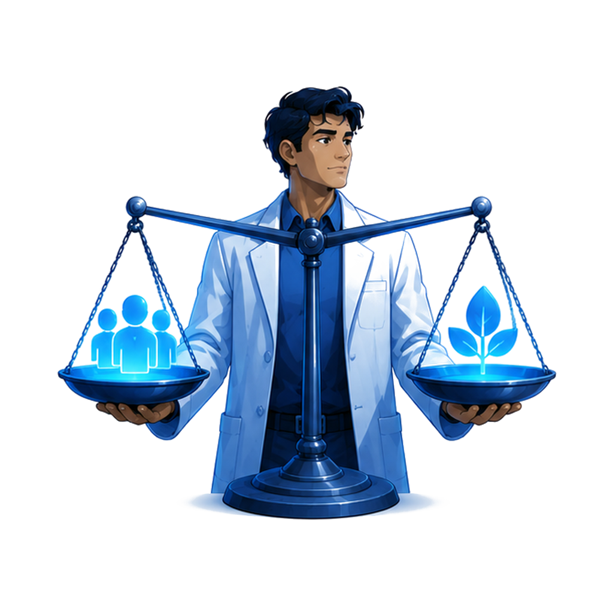

Colloque ADDA · 4 juin 2026 · Innovations sous contrôle : démocratie et numérique
Chercheurs : comment allez-vous survivre à l'IA ?
L'impact de l'IA générative sur la production du savoir scientifique
Jimmy Kolbe-André
Doctorant en droit public, Université Paris-Panthéon-Assas
LinkedIn · kolbejimmy@gmail.com

Nous déléguons pour la première fois nos facultés intellectuelles et créatives à des machines.
Quel impact sur la production du savoir scientifique ?

Fournir une grille de lecture pour comprendre la révolution IA
Objectif principal
Comprendre ce que l'IA change dans la production du savoir scientifique, et ce qui restera propre au chercheur.
Limites
Il ne s'agit pas de vous avertir sur les risques de l'IA ni de vous former sur ses bonnes pratiques.
Plan
- I.Les spécificités de l'IA conçue comme une révolution industrielle
- II.Les différences fondamentales entre le savoir produit par le chercheur et le texte généré par l'IA
- III.Les fonctions du chercheur qui peuvent encore conserver une valeur ajoutée par rapport à l'IA
I. Les spécificités de l'IA conçue comme une révolution industrielle
Une révolution industrielle réorganise le travail de 4 façons.
- 01Standardisation des produits
- 02Spécialisation et division des tâches
- 03Automatisation des procédés de travail
- 04Rationalisation du processus de production

Standardisation des produits
On passe de l'objet artisanal unique à la pièce interchangeable. Le produit n'est plus fabriqué comme une singularité, mais selon des standards de production reproductibles.
Spécialisation et division des tâches
Le travail est décomposé en tâches élémentaires confiées à des opérateurs distincts. Chacun ne maîtrise plus qu'un fragment spécialisé du processus productif.

Automatisation des procédés de travail
La machine prend en charge ce qui était exécuté manuellement. L'effort humain se déplace vers la conduite et la surveillance des machines.
Rationalisation du processus de production
Chaque procédé de travail est mesuré, chronométré, optimisé. Seules les tâches les plus efficaces sont conservées.
Ce qui distingue la révolution IA des précédentes.
- 01Technologie à usage universel
- 02Ubérisation de la connaissance
- 03Automatisation cognitive
- 04Auto-amélioration
Métarévolution
N'importe quel individu peut s'en emparer et révolutionner son propre domaine de compétences en standardisant ses procédés de travail.
Ubérisation de la connaissance
Comme Uber a remplacé le monopole des taxis,
l'IA est désormais accessible à tous.

Automatisation cognitive
Pour la première fois, la machine automatise
des tâches cognitives liées au raisonnement et à la création.
Elle touche aux fonctions des cols blancs,
là où toutes les révolutions précédentes s'arrêtaient.
Auto-amélioration
L'IA peut être programmée pour s'évaluer elle-même,
identifier ses erreurs et améliorer ses propres processus de travail,
sans intervention humaine à chaque cycle.
Dans les révolutions industrielles précédentes,
un ingénieur devait repenser toute l'organisation à chaque innovation.
II. Les différences fondamentales entre le savoir produit par le chercheur et le texte généré par l'IA
Le chercheur produit un savoir qui doit être justifié de manière rationnelle. L'IA prédit du texte en générant une suite de mots probables.
- 01Objectif : comprendre vs calculer
- 02Méthode : justifier vs corréler
- 03Erreur : rectifier vs bluffer
Le chercheur comprend
Connaît en comprenant, en raisonnant,
en reliant des idées entre elles.

L'IA calcule
Calcule la suite de mots
la plus probable.
Le chercheur justifie
Justifie par des arguments rationnels
et des preuves empiriques.

L'IA fait des corrélations
Justifie par la qualité statistique
de ses corrélations,
dont le fonctionnement est parfois opaque (boîte noire).
Le chercheur rectifie
Processus itératif : se tromper,
rectifier, apprendre, se responsabiliser.
L'IA bluffe
Affirme avec aplomb, hallucine,
sans conscience de l'erreur
ni responsabilité.
La fonction prédictive de l'IA est très puissante en ce qu'elle permet d'automatiser l'essentiel des tâches scientifiques !
- Générer et affiner des idées de recherche, formuler des hypothèses
- Concevoir des expériences et effectuer des revues de littérature systématiques
- Rédiger, reformuler, structurer et résumer des textes académiques
- Analyser et visualiser des données qualitatives et quantitatives
- Développer des cadres théoriques et méthodologiques interdisciplinaires
- Suggérer des sources et des citations pertinentes, résumer des textes complexes
III. Les fonctions du chercheur qui peuvent encore conserver une valeur ajoutée par rapport à l'IA
Le chercheur doit s'inspirer des artisans qui ont survécu à la révolution industrielle
Que ce soit face à la machine à vapeur ou à l'ordinateur, les artisans qui ont survécu n'ont pas résisté à la machine. Ils ont développé des traits spécifiques qu'elle ne pouvait ni acquérir ni reproduire.
Quatre facteurs permettent de comprendre la survie des artisans, et peuvent être déclinés aux chercheurs.
- 01Luxe et goût
- 02Sur-mesure et niche
- 03Écosystèmes sociaux
- 04Complémentarité avec l'industrie
Luxe et goût
Ex. : la joaillerie, la haute couture produisent des objets luxueux qui ont de la valeur parce qu'ils sont le fruit d'un jugement esthétique qui ne peut pas être simulé ni massifié.
Le chercheur produit un savoir haut de gamme et possède suffisamment de goût pour juger de l'intérêt théorique d'une idée.

Sur-mesure et niche
Ex. : la lutherie, la restauration d'art déploient une expertise technique qui a de la valeur parce qu'elle est fondamentalement singulière et irréductible à un procédé standard.
Le chercheur demeure un expert de son champ disciplinaire qu'aucune IA entraînée ne pourra restituer.

Écosystèmes sociaux
Ex. : les canuts de Lyon, les ateliers florentins maintiennent une excellence qui a de la valeur parce qu'elle s'appuie sur des réseaux physiques où le savoir se forme.
Les événements scientifiques, les laboratoires, constituent autant d'espaces d'échange où la connaissance se construit collectivement, notamment par des frictions entre pairs.
Complémentarité avec l'industrie
Ex. : le sellier-maroquinier façonne des intérieurs de voiture sur mesure qui ont de la valeur parce qu'ils viennent habiller un véhicule assemblé par des robots sans jamais concurrencer la chaîne de production.
Il ne faut pas être binaire : pour ou contre l'IA ; mais savoir quelles tâches lui déléguer tout en gardant la main sur l'orchestration de la production scientifique.
Ce constat permet de systématiser 4 fonctions que l'IA ne peut (pourra?) jamais accomplir.
- 01Heuristique : découvrir ce qui n'existe pas encore
- 02Herméneutique : interpréter ce que la machine ne fait que décrire
- 03Axiologique : choisir ce qui a de la valeur
- 04Sociale : produire du savoir ensemble
Heuristique
Poser une question que personne n'a posée, reconnaître une anomalie, produire un saut conceptuel. L'IA optimise à l'intérieur d'un cadre. Le chercheur sait quel cadre dépasser.
Herméneutique
L'IA capte le contenu manifeste : fréquences, co-occurrences, schémas. Le chercheur accède au sens implicite, aux non-dits, à l'ironie, à la contradiction. Interpréter, c'est autre chose que résumer.

Axiologique
Choisir une question de recherche, c'est poser un jugement sur ce qui a de la valeur. L'IA résout des problèmes. Le chercheur décide lesquels méritent d'être posés.
Sociale
La science est une entreprise collective : confiance, confrontation entre pairs, cumul intergénérationnel des savoirs. Construire un réseau, former un doctorant, reconnaître une erreur : autant de compétences que l'IA n'a pas.
Ce que l'IA change, et ce qu'elle ne changera pas
- Traiter et synthétiser de grandes quantités de texte
- Générer des hypothèses et des formulations à vitesse industrielle
- Identifier des corrélations dans des données complexes
- Rédiger, reformuler et structurer des textes en quelques secondes
- Heuristique : poser des questions que personne n'avait posées
- Herméneutique : interpréter ce que la machine ne fait que décrire
- Axiologique : choisir ce qui mérite vraiment d'être étudié
- Sociale : construire du savoir avec ses pairs et pour eux
Merci beaucoup, à vos questions !
LinkedIn : Jimmy Kolbe-André
kolbejimmy@gmail.com